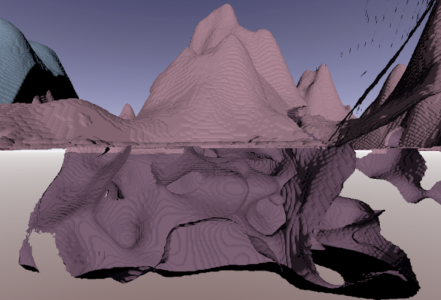
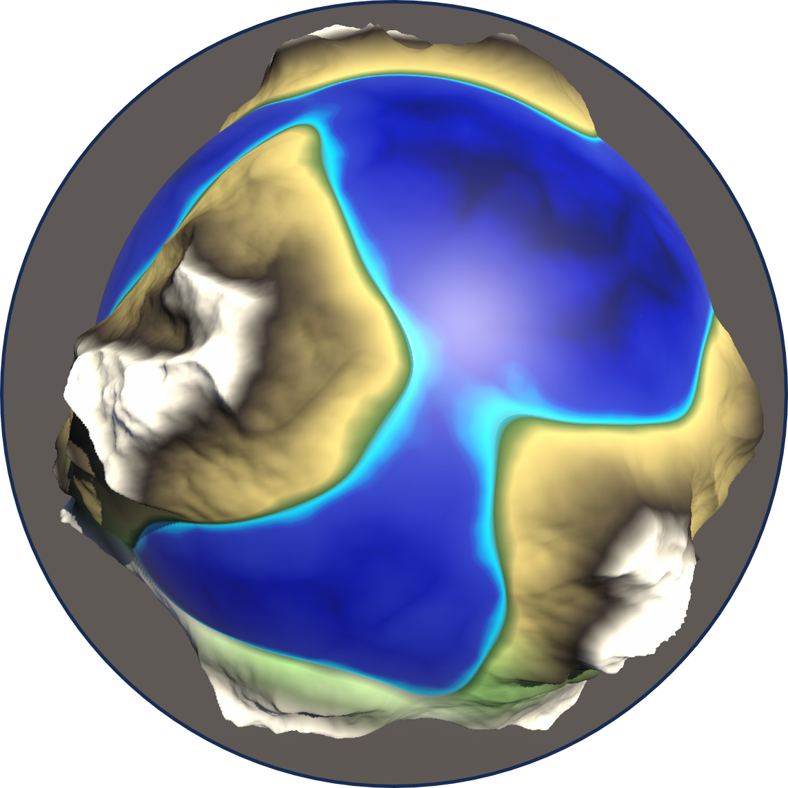
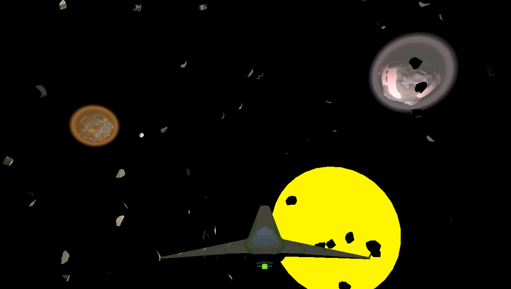

Design and development of a game concept with emphasis on the research and use of procedural generation techniques for the creation of solar systems.
This project investigates procedural generation techniques for creating solar systems and planets, culminating in a playable game prototype where players explore unique, procedurally generated environments.
Introduction
The rapid growth of the video game industry has led to an increasing need for efficient content generation techniques. Procedural generation has emerged as a key solution, enabling the creation of vast, dynamic environments while reducing development time and costs. This project investigates and implements procedural generation techniques to develop a game prototype focused on exploring procedurally generated solar systems and planets.
The objective is to create a unique gaming experience where players navigate a solar system in a spacecraft, explore planetary surfaces, and discover diverse biomes, all generated dynamically. This project is rooted in research on procedural generation techniques and their practical application in video game development.
Research Phase
The research phase involved studying procedural generation techniques widely used in the gaming industry. Key activities included:
- Review of Procedural Techniques: Analyzed methods such as Noise Maps, Voxels, Wave Function Collapse, and Marching Cubes to evaluate their strengths, weaknesses, and applicability in game development.
- Case Studies: Investigated games like Minecraft, No Man’s Sky, and Astroneer, identifying how procedural generation contributes to their success and gameplay mechanics.
- Prototyping: Developed small-scale prototypes to test various techniques, including terrain generation, biome transitions, and 3D rendering, to determine their suitability for the project.
As a conclusion to the research phase of the project, a comparative table of technologies was created. This table provides a summary of each technology, outlining their strengths and weaknesses, as well as their common applications. The objective is to offer a quick overview of which technologies can be used effectively in different scenarios, helping to select techniques that provide robust solutions tailored to each project’s needs.
| Technology | Main Use | Scalability | Detail Level | Implementation Complexity | Resource Requirements | Application Examples |
|---|---|---|---|---|---|---|
| Noise Maps | Terrain and biome generation | High | High | Low | Moderate | Minecraft, Terragen |
| Wave Function Collapse | Map and texture generation | Low | Very High | Medium | High | Bad North, Texture Generation |
| Cellular Automata | Generation of caves and terrains | Moderate | Medium | Medium | Moderate to High | Brogue, Ecological Simulations |
| Voxels | 3D representation and manipulation | High | Medium to High | High | High | Minecraft, Voxel-Based Simulations |
| L-Systems | Plant and structure generation | High | High | Medium | Moderate | Ecosystem Simulations, Games |
| Space Colonization Algorithm (SCA) | Generation of plants and trees | Moderate | Very High | Medium | Moderate | Ecosystem Simulations |
The table summarizes how different procedural generation techniques can be applied to achieve effective results, offering insights into their scalability, implementation challenges, and potential uses in projects.
Development Phase
The development phase focused on building a functional game prototype using the insights gained during research. Key accomplishments included:
- Procedural Solar System Generation:
- Implemented algorithms to dynamically create solar systems with planets orbiting a central star.
- Designed planets with unique features, such as terrain, biomes, and atmospheric conditions.
- Planetary Terrain and Biomes:
- Generated detailed planetary surfaces using multi-layered Noise Maps.
- Developed biome-specific characteristics and ensured seamless transitions between different ecosystems.
- Gameplay Mechanics:
- Developed spacecraft controls for intuitive navigation of the solar system.
- Implemented astronaut mechanics, including walking, jetpack usage, and material scanning.
- Visual and Performance Enhancements:
- Created realistic visuals using Unity’s ShaderGraph for rendering planets, atmospheres, and lighting effects.
- Optimized performance with compute shaders, ensuring smooth gameplay in complex procedural environments.
Results
The final game prototype successfully demonstrates the potential of procedural generation in creating dynamic, explorable environments. Key outcomes include:
- A procedurally generated solar system with planets that can be explored from both space and their surfaces.
- Engaging gameplay mechanics encouraging exploration through intuitive controls and interactive features like scanning.
- Efficient performance, maintaining stable frame rates even in complex environments.
The prototype received positive feedback during initial testing, with players highlighting the immersive exploration mechanics and seamless transitions between gameplay modes.
Image Gallery

Generated solar system.

Generated planet example.

Mountain generation with caves.